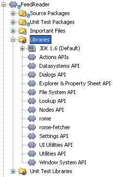

Apache NetBeans
Apache NetBeansLatest release
NetBeans Platform Feed Reader Tutorial
| This tutorial needs a review. You can open a JIRA issue, or edit it in GitHub following these contribution guidelines. |
- Prerequisite Knowledge
- Setting Up the Application
- Creating the Feed Reader Window
- Trying Out the Application
- Adding Code to the Application
- Specifying the Application’s Dependencies
- Setting Dependencies Between Library Wrapper Modules
- Creating the RssFeeds Folder
- Creating the Feed Object
- Extending the Feed Window
- Creating the Root Node
- Creating the Root Node Children
- Creating the Add Feed Action
- Creating the Add Folder Action
- Creating the Feed Node
- Creating the Entry Node
- Localizing the RssNode Class
- Run the Application
- Troubleshooting
Welcome to the NetBeans Platform Feed Reader tutorial. The Feed Reader that you create in this tutorial is a simple RSS/Atom feed browser, modeled after the Sage plug-in for Mozilla Firefox. It presents a tree of feeds with subnodes representing individual feed entries that you can open in a browser.
To illustrate the end result, here you see the Feed Reader that you will create in this tutorial, displaying a feed entry from the NetBeans Highlights feed:

| This document uses NetBeans IDE 7.1 and NetBeans Platform 7.1. If you are using an earlier version, see the previous version of this document. |
Prerequisite Knowledge
This is not a beginner’s tutorial. You are assumed not only to be familiar with Java and with Swing, but with the basic concepts and processes of the NetBeans Platform. At the very least, you should be aware of the following two documents and, ideally, you will have worked through them and understood the topics they address:
-
NetBeans Platform 7 DZone Refcard. Anyone getting started with the NetBeans Platform must have this DZone RefCard, which explains the benefits, scope, and features of the NetBeans Platform. It outlines the most important APIs and provides many tips and tricks.
-
NetBeans Platform Quick Start. This short tutorial guides you through a complete process for building a rich-client application on top of the NetBeans Platform. The major development stages and tools are covered, and a modular application is the result of the tutorial. This tutorial also introduces crucial classes used in the tutorial below, in particular the classes Lookup, LookupListener, and InstanceContent.
Setting Up the Application
In NetBeans IDE, building an application on top of the NetBeans Platform starts with generating a number of files which will serve as the foundation of your application. For example, the IDE provides several project wizards that set up all the basic files needed by modules and applications built on the NetBeans Platform.
-
NetBeans Platform Application. A project that groups a set of module projects and library wrapper module projects that have dependencies on each other, and lets you deploy them together as a unit. Automatically included are a subset of the modules that make up the NetBeans Platform.
-
Module Suite. Same as above, except that the pre-included modules are more than only those relating to the NetBeans Platform—in this case, all the modules that make up NetBeans IDE are included as well.
-
Library Wrapper Module. A project that puts a library JAR file on its classpath and exports some or all of the JAR file’s packages from the module as public packages.
-
Module. A project for implementing the functionality, business logic, and user interface of a module or application built on the NetBeans Platform.
Creating the Application Skeleton
-
Choose File > New Project (Ctrl-Shift-N). Under Categories, select NetBeans Modules. Under Projects, select NetBeans Platform Application. You should see the following:

Depending on the modules installed in your IDE, different categories may be shown in the Categories list above.
Click Next.
-
In the Name and Location panel, type
FeedReaderin Project Name. Change the Project Location to any directory on your computer.

Click Finish.
The IDE creates the FeedReader project, which looks as follows in the Projects window:

The project will contain the custom module projects that you will create in the following sections.
Wrapping the Libraries
You could bundle the entire Feed Reader application into a single module. However, the application needs the Rome, Rome Fetcher, and JDom libraries:
-
Rome. Reads RSS and Atom feeds, using a very simple API.
-
Rome Fetcher. Allows the retrieval of feeds via HTTP.
-
JDom. Is an XML parsing API. The only reason the Feed Reader will need it is because the Rome library uses it.
Later, if you want to extend the Feed Reader application with more modules that may use these libraries, it would be better for them to depend on just the library modules, rather than the entire Feed Reader. Also, library modules can be "autoloading", which means that NetBeans will only load them when needed. Until that happens, it won’t take up any memory at runtime.
-
Right-click the Modules node in the project in the Projects window, as shown below, and click Add New Library:

-
In the Select Library panel, browse to the folder where you downloaded JDom, and then select
jdom.jarandLICENSE.txt.Click Next.
1. In the Name and Location panel, accept all the defaults.
The library wrapper module project will be stored within the application project. You could also store it somewhere else, but for versioning purposes it is a good idea to put it within the application project. Therefore, the FeedReader application project is selected in the Add to Module Suite drop-down.
Click Next.
-
In the Basic Module Configuration panel, type
org.jdomas the code name base and leave all the other defaults unchanged. Click Finish.
The new library wrapper module project opens in the IDE and displays in the Projects window. You should now see the following in the Projects window:

A frequent point of confusion is that you see two different "jdom" nodes above, each accompanied by a purple icon. The first of these, above, shows the relationship of the "jdom" module to the whole application. The second is the "jdom" project itself, containing its sources and libraries. This pattern is used throughout the application, with each module being shown in two different ways, as above.
-
Return to step 1 of this section and create a library wrapper module project for Rome. Use code name base "org.rome" and accept all the other defaults.
-
Return to step 1 of this section and create a library wrapper module project for Rome Fetcher. Use code name base "org.fetcher" and accept all the other defaults.
You now have an application skeleton, with three library wrapper module projects, providing many useful Java classes that you will be able to make use of throughout this tutorial:

Creating the Module Project
In this section, we create a project for the functionality that our application will provide. The project will make use of the classes made available by the library wrapper modules that we created in the previous section.
-
Right-click the Modules node in the application project in the Projects window, as shown below, and click Add New:

-
In the Name and Location panel, type
FeedReaderin Project Name. Accept all the other defaults. Click Next.
-
In the Basic Module Configuration panel, type
org.myorg.feedreaderin Code Name Base.
-
Do not select "Generate OSGi Bundle". Click Finish.
The IDE creates the FeedReader project. The project contains all of the module’s sources and project metadata, such as the project’s Ant build script. The project opens in the IDE. You can view its logical structure in the Projects window (Ctrl-1) and its file structure in the Files window (Ctrl-2). The Projects window should now show the following:

You have now created the source structure of your new application. In the next section, we will begin adding some code.
Creating the Feed Reader Window
In this section you use the Window wizard to generate files that create a custom windowing component and an action to invoke it. Right after finishing this section, you are shown how to try out the files that the Window wizard generates for you.
-
Right-click the
FeedReadermodule project node and choose New > Other. Under Categories, select Module Development. Under File Types, select Window, as shown below:

Click Next.
-
In the Basic Settings panel, select
explorerin the drop-down list and click Open on Application Start. Click Next.
-
In the Name and Location panel, type Feed in the Class Name Prefix field. In the Icon field, browse to the location where you saved
rss16.gif ( image::images/feedreader_rss16.gif[]).The GIF file will be shown in the menu item that invokes the action. Click Finish.
The new FeedTopComponent class is now shown in the Projects window, as well as in the Design view of the Matisse GUI Builder. Open it into the Source view and you should see the following:
import org.openide.util.NbBundle;
import org.openide.windows.TopComponent;
import org.openide.windows.WindowManager;
import org.netbeans.api.settings.ConvertAsProperties;
import org.openide.awt.ActionID;
import org.openide.awt.ActionReference;
link:http://bits.netbeans.org/dev/javadoc/org-netbeans-modules-settings/org/netbeans/api/settings/ConvertAsProperties.html[@ConvertAsProperties](dtd = "-//org.myorg.feedreader//Feed//EN",
autostore = false)
link:http://bits.netbeans.org/dev/javadoc/org-openide-windows/org/openide/windows/TopComponent.Description.html[@TopComponent.Description](preferredID = "FeedTopComponent",
iconBase = "org/myorg/feedreader/rss16.gif",
persistenceType = TopComponent.PERSISTENCE_ALWAYS)
link:http://bits.netbeans.org/dev/javadoc/org-openide-windows/org/openide/windows/TopComponent.Registration.html[@TopComponent.Registration](mode = "explorer", openAtStartup = true)
link:http://bits.netbeans.org/dev/javadoc/org-openide-awt/org/openide/awt/ActionID.html[@ActionID](category = "Window", id = "org.myorg.feedreader.FeedTopComponent")
link:http://bits.netbeans.org/dev/javadoc/org-openide-awt/org/openide/awt/ActionReference.html[@ActionReference](path = "Menu/Window" /*, position = 333 */)
link:http://bits.netbeans.org/dev/javadoc/org-openide-windows/org/openide/windows/TopComponent.OpenActionRegistration.html[@TopComponent.OpenActionRegistration](displayName = "#CTL_FeedAction",
preferredID = "FeedTopComponent")
public final class FeedTopComponent extends link:http://bits.netbeans.org/dev/javadoc/org-openide-windows/org/openide/windows/TopComponent.html[TopComponent] {
private FeedTopComponent() {
setName(NbBundle.getMessage(FeedTopComponent.class, "CTL_FeedTopComponent"));
setToolTipText(NbBundle.getMessage(FeedTopComponent.class, "HINT_FeedTopComponent"));
}
/** This method is called from within the constructor to
* initialize the form.
* WARNING: Do NOT modify this code. The content of this method is
* always regenerated by the Form Editor.
*/
// <editor-fold defaultstate="collapsed" desc="Generated Code">
private void initComponents() {
javax.swing.GroupLayout layout = new javax.swing.GroupLayout(this);
this.setLayout(layout);
layout.setHorizontalGroup(
layout.createParallelGroup(javax.swing.GroupLayout.Alignment.LEADING)
.addGap(0, 400, Short.MAX_VALUE)
);
layout.setVerticalGroup(
layout.createParallelGroup(javax.swing.GroupLayout.Alignment.LEADING)
.addGap(0, 300, Short.MAX_VALUE)
);
}// </editor-fold>
// Variables declaration - do not modify
// End of variables declaration
@Override
public void componentOpened() {
// TODO add custom code on component opening
}
@Override
public void componentClosed() {
// TODO add custom code on component closing
}
void writeProperties(java.util.Properties p) {
// better to version settings since initial version as advocated at
// http://wiki.apidesign.org/wiki/PropertyFiles
p.setProperty("version", "1.0");
}
void readProperties(java.util.Properties p) {
String version = p.getProperty("version");
}
}When you build the module, the class annotations that you see at the top of the class above will be converted to XML tags in a file that will be contributed to the central registry of the application. The XML file will be named "generated-layer.xml" and will be found in the "build\classes\META-INF" folder of your module, which you can see if the Files window (Ctrl-2) is open in the IDE. This file is created at compile-time and contains XML entries generated from the NetBeans annotations that you have defined in your Java classes. Together with the "layer.xml" file that your module provides, the "generated-layer.xml" file defines the contributions that the module makes to the central registry.
Valid values for the "mode" parameter, in @TopComponent.Registration , depend on the modes registered in the central registry. Commonly, these include "editor", "explorer", "properties", and "output", among others. See the section "Creating the RssFeeds Folder" below to learn about how you can explore the central registry and inspect its folders and files. if the @Messages annotation were to be used.
The code above could be even more idiomatic NetBeans Platform code if the @Messages annotation were to be used.
Trying Out the Application
Without having typed a single line of code, you can already take your application for a spin. Trying it out means deploying the modules to the NetBeans Platform and then checking to see that the empty Feed Window displays correctly.
-
In the Projects window, right-click the
FeedReaderproject.
-
Choose Run.
The application starts up. You see a splash screen. Then the application opens and displays the new Feed Window, as an explorer window, shown below:

| What you now have is an application consisting of the following modules: |
-
The modules provided by the NetBeans Platform, for bootstrapping the application, lifecycle management, window system, menu bars, toolbars, and other infrastructural concerns.
-
The three library wrapper modules that you created in this tutorial.
-
The FeedReader functionality module that you created in this tutorial, for providing the Feed window.
In the application’s Window menu, you should see the new menu item, which you can use for opening the Feed window, if it is closed.
As you can see, without having done any coding, we have a complete application. It doesn’t do much yet, but the entire infrastructure exists and works as one would expect. Next, we begin using some of the NetBeans APIs, to add code to our application.
Adding Code to the Application
Now that you have laid the basis for your application, it’s time to begin adding your own code. Before doing so, you need to specify the application’s dependencies. Dependencies are modules that provide the NetBeans APIs that you will extend or implement. Then, you will use the New File wizard and the Source Editor to create and code the classes that make up the Feed Reader application.
Specifying the Application’s Dependencies
You need to subclass several classes that belong to the NetBeans APIs. The classes belong to modules that need to be declared as dependencies of your Feed Reader application. Use the Project Properties dialog box for this purpose, as explained in the steps below.
-
In the Projects window, right-click the
FeedReadermodule project and choose Properties. In the Project Properties dialog box, click Libraries. Notice that some APIs have already been declared as Module Dependencies, thanks to the Window wizard you used earlier.
-
Click Add Dependency. You will need the following APIs. Some have been added by the Window wizard. Add the others yourself: Actions APIs
link:http://bits.netbeans.org/dev/javadoc/org-openide-loaders/org/openide/loaders/doc-files/api.html[Datasystems API]
link:http://bits.netbeans.org/dev/javadoc/org-openide-dialogs/org/openide/package-summary.html[Dialogs API]
link:http://bits.netbeans.org/dev/javadoc/org-openide-explorer/org/openide/explorer/doc-files/api.html[Explorer and Property Sheet API]
link:http://bits.netbeans.org/dev/javadoc/org-openide-filesystems/org/openide/filesystems/doc-files/api.html[File System API]
link:http://bits.netbeans.org/dev/javadoc/org-openide-util-lookup/org/openide/util/lookup/doc-files/lookup-api.html[Lookup API]
link:http://bits.netbeans.org/dev/javadoc/org-openide-nodes/org/openide/nodes/doc-files/api.html[Nodes API]
rome
rome-fetcher
link:http://bits.netbeans.org/dev/javadoc/org-netbeans-modules-settings/overview-summary.html[Settings API]
link:http://bits.netbeans.org/dev/javadoc/org-openide-awt/overview-summary.html[UI Utilities API]
link:http://bits.netbeans.org/dev/javadoc/org-openide-util/overview-summary.html[Utilities API]
link:http://bits.netbeans.org/dev/javadoc/org-openide-windows/org/openide/windows/package-summary.html[Window System API]Click OK to exit the Project Properties dialog box.
-
Expand the
FeedReaderproject’s Libraries node and notice the list of modules that are now available to this project:

Setting Dependencies Between Library Wrapper Modules
Now that we have set dependencies on the NetBeans API modules that we will use, let’s also set dependencies between our library wrapper modules. For example, the Rome JAR makes use of classes from the JDom JAR. Now that these are wrapped in separate library wrapper modules, we need to specify the relationship between the JARs via the library wrapper module’s Project Properties dialog box.
-
First, lets make Rome dependent on JDom. Right-click the Rome library wrapper module project in the Projects window and choose Properties. In the Project Properties dialog box, click Libraries and then click Add Dependency. Add
jdom. Click OK to exit the Project Properties dialog box. When you expand the Libraries node in the Rome project, you should now see the following:

-
Finally, since Rome Fetcher depends on both Rome and JDom, you need to make Rome Fetcher dependent on Rome. Do so following the same instructions as the above, so that Rome Fetcher depends on Rome, as shown below:

Because Rome already depends on JDom, you do not need to make Rome Fetcher dependent on JDom.
Creating the RssFeeds Folder
You will use the IDE’s user interface to add a folder to the layer.xml file, which the module will contribute to the application’s central registry at runtime. The folder will contain our RSS feed objects. Later, you will add code to FeedTopComponent.java , which was created for you by the Window wizard, to view the content of this folder.
-
Right-click the
FeedReadermodule project node and choose New > Other > Module Development > XML Layer. Click Finish. You now have an XML file, registered in the manifest of the module, which the module will contribute to the central registry (the virtual filesystem) of the application.
-
In the Projects window, expand the
FeedReadermodule project node and then expand the XML Layer node.
When you expand the subnodes, you see "<this layer>" , containing the folders and files registered in the current module’s layer file, as well as "<this layer in context>" , which merges all the folders and files from all the modules in the whole application:

-
Right-click the
<this layer>node and choose New > Folder:

-
Type
RssFeedsin the New Folder dialog box. Click OK.
-
Double-click the node for the
layer.xmlfile so that it opens in the Source Editor. Notice that this entry has been added:<folder name="RssFeeds"/>
You have now created a new folder in the central registry. The central registry is also known as the "System FileSystem". Read more about the central registry here.
Creating the Feed Object
Next you create a plain Java class that encapsulates a URL and its associated Rome feed.
-
Right-click the
FeedReadermodule project node, choose New > Java Class.
-
Name the class
Feedand selectorg.myorg.feedreaderin the Package drop-down. Click Finish.
-
In the Source Editor, replace the default
Feedclass with the following:
public class Feed implements Serializable {
private static final long serialVersionUID = 1L;
private static final FeedFetcher FEED_FETCHER =
new HttpURLFeedFetcher(HashMapFeedInfoCache.getInstance());
private transient SyndFeed syndFeed;
private final URL url;
private String name;
public Feed(URL url) {
this.url = url;
name = url.toExternalForm();
}
public URL getURL() {
return url;
}
public SyndFeed getSyndFeed() throws IOException {
if (syndFeed == null) {
try {
syndFeed = FEED_FETCHER.retrieveFeed(url);
String title = syndFeed.getTitle();
if (title != null) {
name = title;
}
} catch (Exception ex) {
throw (IOException) new IOException(ex.toString()).initCause(ex);
}
}
return syndFeed;
}
@Override
public String toString() {
return name;
}
public static Feed getSample() {
try {
return new Feed(new URL(NbBundle.getMessage(Feed.class, "URL_sample_feed")));
} catch (MalformedURLException x) {
throw new AssertionError(x);
}
}
}A lot of code is underlined, because you have not declared their packages. You do this in the next steps.
Take the following steps to reformat the file and declare its dependencies:
-
Press Alt-Shift-F to format the code.
1. Press Ctrl-Shift-I and make sure the following import statements are selected:

Click OK, and the IDE adds the following import statements to the class:
import com.sun.syndication.feed.synd.SyndFeed;
import com.sun.syndication.fetcher.FeedFetcher;
import com.sun.syndication.fetcher.impl.HashMapFeedInfoCache;
import com.sun.syndication.fetcher.impl.HttpURLFeedFetcher;
import java.io.IOException;
import java.io.Serializable;
import java.net.MalformedURLException;
import java.net.URL;
import org.openide.util.NbBundle;All the red underlining should now have disappeared. If not, do not continue with this tutorial until you have solved the problem.
Extending the Feed Window
In this section, we use a NetBeans Swing component called BeanTreeView to display a hierarchy of feeds in our TopComponent .
-
Double-click
FeedTopComponent.javaand then click the Source button, so that theTopComponentopens in the Source Editor.
-
Type
implements ExplorerManager.Providerat the end of the class declaration.
-
Press Alt-Enter in the line and click on the suggestion. The IDE adds an import statement for the required package
org.openide.explorer.ExplorerManager.
-
Press Alt-Enter again and click on the suggestion. The IDE implements the abstract method
getExplorerManager().
-
Type
return manager;in the body of the newgetExplorerManager()method. Press Alt-Enter in the line and let the IDE create a field calledmanagerfor you. Replace the default definition with this one:
private final ExplorerManager manager = new ExplorerManager();-
Right below the field declaration in the previous step, declare this one:
private final BeanTreeView view = new BeanTreeView();-
Finally, add the following code to the end of the constructor:
setLayout(new BorderLayout());
add(view, BorderLayout.CENTER);
manager.setRootContext(new RssNode.RootRssNode());
ActionMap map = getActionMap();
map.put("delete", ExplorerUtils.actionDelete(manager, true));
associateLookup(ExplorerUtils.createLookup(manager, map));Now a lot of code is underlined, because you have not declared their associated packages. You do this in the next steps.
Take the following steps to reformat the file and declare its dependencies:
-
Press Alt-Shift-F to format the code.
-
Press Ctrl-Shift-I and the IDE adds several import statements below the package statement. The complete list of import statements should be as follows:
import java.awt.BorderLayout;
import java.util.logging.Logger;
import javax.swing.ActionMap;
import org.openide.util.NbBundle;
import org.openide.windows.TopComponent;
import org.openide.windows.WindowManager;
import org.openide.util.ImageUtilities;
import org.netbeans.api.settings.ConvertAsProperties;
import org.openide.explorer.ExplorerManager;
import org.openide.explorer.ExplorerUtils;
import org.openide.explorer.view.BeanTreeView;-
Note that the line
manager.setRootContext(new RssNode.RootRssNode());is still underlined in red, because you have not createdRssNode.javayet. This you will do in the next subsection. All other red underlining should now have disappeared. If not, do not continue with this tutorial until you have solved the problem.
Creating the Root Node
The top level node of our Feed Reader is provided by the RssNode class. The class extends AbstractNode , which is the generic convenience class for creating your own Nodes. It creates its child Nodes by using the 'RssFeeds' folder that you created in the "Creating the RssFeeds Folder" section earlier in this tutorial. In addition to child Nodes, the RootNode has a display name and an Action for creating new feeds.
Take the following steps to create the RootNode class:
-
Create
RssNode.javain theorg.myorg.feedreaderpackage.
-
Replace the default class with the following:
import javax.swing.Action;
import org.openide.filesystems.FileUtil;
import org.openide.loaders.DataFolder;
import org.openide.loaders.DataObject;
import org.openide.loaders.DataObjectNotFoundException;
import org.openide.nodes.FilterNode;
import org.openide.nodes.Node;
import org.openide.util.NbBundle;
public class RssNode extends link:http://bits.netbeans.org/dev/javadoc/org-openide-nodes/org/openide/nodes/FilterNode.html[FilterNode] {
/** Declaring the children of the root RSS node */
public RssNode(Node folderNode) {
super(folderNode, new RssFolderChildren(folderNode));
}
/** Declaring the Add Feed action and Add Folder action */
@Override
public Action[] getActions(boolean popup) {
DataFolder df = getLookup().lookup(DataFolder.class);
return new Action[] {
new AddRssAction(df),
new AddFolderAction(df)
};
}
/** Getting the root node */
public static class RootRssNode extends RssNode {
public RootRssNode() throws DataObjectNotFoundException {
super(DataObject.find(
FileUtil.getConfigFile("RssFeeds")).getNodeDelegate());
}
@Override
public String getDisplayName() {
return NbBundle.getMessage(RssNode.class, "FN_title");
}
}
}Several red underline markings remain in the class, because you have not yet created the RssFolderChildren class, the OneFeedNode class, the AddRssAction class, and the AddFolderAction class.
Creating the Root Node Children
In this section, we create the children of the root node. Each child is a folder, containing RSS feeds. The RSS feeds, in turn, contain the articles that are shown in a browser.
To create this class, take the following steps:
-
Create
RssFolderChildren.javain theorg.myorg.feedreaderpackage.
1. Replace the default class with the following:
import java.io.IOException;
import org.netbeans.feedreader.Feed;
import org.openide.filesystems.FileObject;
import org.openide.loaders.DataFolder;
import org.openide.nodes.FilterNode;
import org.openide.nodes.Node;
import org.openide.util.Exceptions;
/** Getting the children of the root node */
public class RssFolderChildren extends FilterNode.Children {
RssFolderChildren(Node rssFolderNode) {
super(rssFolderNode);
}
@Override
protected Node[] createNodes(Node n) {
if (n.getLookup().lookup(DataFolder.class) != null) {
return new Node[]{new RssNode(n)};
} else {
Feed feed = getFeed(n);
if (feed != null) {
try {
return new Node[]{new OneFeedNode(n, feed.getSyndFeed())};
} catch (IOException ioe) {
Exceptions.printStackTrace(ioe);
}
}
}
// best effort
return new Node[]{new FilterNode(n)};
}
/** Looking up a feed */
private static Feed getFeed(Node node) {
Feed f = FileUtil.getConfigObject("RssFeeds/sample.instance", Feed.class);
if (f == null) {
throw new IllegalStateException("Bogus file in feeds folder: " +
node.getLookup().lookup(FileObject.class));
}
return f;
}
}Creating the Add Feed Action
In this section, we create the menu item that adds new feeds. As you can see in the previous section, the Add Feed Action is bound to the context-menu of the Root Node.
To create this class, take the following steps:
-
Create
AddRssAction.javain theorg.myorg.feedreaderpackage.
1. Replace the default class with the following:
import java.awt.event.ActionEvent;
import java.io.IOException;
import java.io.InputStream;
import java.io.ObjectOutputStream;
import java.net.MalformedURLException;
import java.net.URL;
import javax.swing.AbstractAction;
import org.netbeans.feedreader.Feed;
import org.openide.DialogDisplayer;
import org.openide.NotifyDescriptor;
import org.openide.filesystems.FileLock;
import org.openide.filesystems.FileObject;
import org.openide.loaders.DataFolder;
import org.openide.util.Exceptions;
import org.openide.util.NbBundle;
/** An action for adding a feed */
public class AddRssAction extends AbstractAction {
private final DataFolder folder;
public AddRssAction(DataFolder df) {
super(NbBundle.getMessage(AddRssAction.class, "FN_addbutton"));
folder = df;
}
public void actionPerformed(ActionEvent ae) {
link:http://bits.netbeans.org/dev/javadoc/org-openide-dialogs/org/openide/NotifyDescriptor.html[NotifyDescriptor].InputLine nd = new NotifyDescriptor.InputLine(
NbBundle.getMessage(AddRssAction.class, "FN_askurl_msg"),
NbBundle.getMessage(AddRssAction.class, "FN_askurl_title"),
NotifyDescriptor.OK_CANCEL_OPTION,
NotifyDescriptor.PLAIN_MESSAGE);
Object result = link:http://bits.netbeans.org/dev/javadoc/org-openide-dialogs/org/openide/DialogDisplayer.html[DialogDisplayer].getDefault().notify(nd);
if (result.equals(NotifyDescriptor.OK_OPTION)) {
String urlString = nd.getInputText();
URL url;
try {
url = new URL(urlString);
} catch (MalformedURLException e) {
String message = NbBundle.getMessage(AddRssAction.class, "FN_askurl_err", urlString);
Exceptions.attachLocalizedMessage(e, message);
Exceptions.printStackTrace(e);
return;
}
try {
checkConnection(url);
} catch (IOException e) {
String message = NbBundle.getMessage(AddRssAction.class, "FN_cannotConnect_err", urlString);
Exceptions.attachLocalizedMessage(e, message);
Exceptions.printStackTrace(e);
return;
}
Feed f = new Feed(url);
FileObject fld = folder.getPrimaryFile();
String baseName = "RssFeed";
int ix = 1;
while (fld.getFileObject(baseName + ix, "ser") != null) {
ix++;
}
try {
FileObject writeTo = fld.createData(baseName + ix, "ser");
FileLock lock = writeTo.lock();
try {
ObjectOutputStream str = new ObjectOutputStream(writeTo.getOutputStream(lock));
try {
str.writeObject(f);
} finally {
str.close();
}
} finally {
lock.releaseLock();
}
} catch (IOException ioe) {
Exceptions.printStackTrace(ioe);
}
}
}
private static void checkConnection(final URL url) throws IOException {
InputStream is = url.openStream();
is.close();
}
}Creating the Add Folder Action
In this section, we create the menu item that adds new folders, in which new feeds can be created. As you can see in an earlier section, the Add Folder Action is bound to the context-menu of the Root Node.
To create this class, take the following steps:
-
Create
AddFolderAction.javain theorg.myorg.feedreaderpackage.
1. Replace the default class with the following:
import java.awt.event.ActionEvent;
import java.io.IOException;
import javax.swing.AbstractAction;
import org.openide.DialogDisplayer;
import org.openide.NotifyDescriptor;
import org.openide.loaders.DataFolder;
import org.openide.util.Exceptions;
import org.openide.util.NbBundle;
/** An action for adding a folder to organize feeds into groups */
public class AddFolderAction extends AbstractAction {
private final DataFolder folder;
public AddFolderAction(DataFolder df) {
super(NbBundle.getMessage(AddFolderAction.class, "FN_addfolderbutton"));
folder = df;
}
public void actionPerformed(ActionEvent ae) {
link:http://bits.netbeans.org/dev/javadoc/org-openide-dialogs/org/openide/NotifyDescriptor.html[NotifyDescriptor].InputLine nd = new NotifyDescriptor.InputLine(
NbBundle.getMessage(AddFolderAction.class, "FN_askfolder_msg"),
NbBundle.getMessage(AddFolderAction.class, "FN_askfolder_title"),
NotifyDescriptor.OK_CANCEL_OPTION,
NotifyDescriptor.PLAIN_MESSAGE);
Object result = link:http://bits.netbeans.org/dev/javadoc/org-openide-dialogs/org/openide/DialogDisplayer.html[DialogDisplayer].getDefault().notify(nd);
if (result.equals(NotifyDescriptor.OK_OPTION)) {
final String folderString = nd.getInputText();
try {
DataFolder.create(folder, folderString);
} catch (IOException ex) {
Exceptions.printStackTrace(ex);
}
}
}
}Creating the Feed Node
Here we are concerned with the container for the article nodes, as shown below for the 'NetBeans Highlights' node:

As can be seen, each of these nodes has a display name, retrieved from the feed, an icon, and a Delete menu item.
Take the following steps to create this class:
-
Create
OneFeedNode.javain theorg.myorg.feedreaderpackage.
-
Replace the default class with the following:
import com.sun.syndication.feed.synd.SyndFeed;
import java.awt.Image;
import javax.swing.Action;
import org.openide.actions.DeleteAction;
import org.openide.nodes.FilterNode;
import org.openide.nodes.Node;
import org.openide.util.ImageUtilities;
import org.openide.util.Lookup;
import org.openide.util.actions.SystemAction;
import org.openide.util.lookup.Lookups;
import org.openide.util.lookup.ProxyLookup;
/** Getting the feed node and wrapping it in a FilterNode */
public class OneFeedNode extends link:http://bits.netbeans.org/dev/javadoc/org-openide-nodes/org/openide/nodes/FilterNode.html[FilterNode] {
OneFeedNode(Node feedFileNode, SyndFeed feed) {
super(feedFileNode,
new FeedChildren(feed),
new ProxyLookup(new Lookup[]{
Lookups.fixed(new Object[]{feed}),
feedFileNode.getLookup()
}));
}
@Override
public String getDisplayName() {
SyndFeed feed = getLookup().lookup(SyndFeed.class);
return feed.getTitle();
}
@Override
public Image getIcon(int type) {
return link:http://bits.netbeans.org/dev/javadoc/org-openide-util/org/openide/util/ImageUtilities.html[ImageUtilities].loadImage("org/netbeans/feedreader/rss16.gif");
}
@Override
public Image getOpenedIcon(int type) {
return getIcon(type);
}
@Override
public Action[] getActions(boolean context) {
return new Action[]{SystemAction.get( link:http://bits.netbeans.org/dev/javadoc/org-openide-actions/org/openide/actions/DeleteAction.html[DeleteAction].class)};
}
}Several red underline markings remain in the class, because we have not created our FeedChildren class yet. Here it is:
import com.sun.syndication.feed.synd.SyndEntry;
import com.sun.syndication.feed.synd.SyndFeed;
import java.beans.IntrospectionException;
import org.openide.nodes.Children;
import org.openide.nodes.Node;
import org.openide.util.NbCollections;
/** Defining the children of a feed node */
public class FeedChildren extends link:http://bits.netbeans.org/dev/javadoc/org-openide-nodes/org/openide/nodes/Children.Keys.html[Children.Keys<SyndEntry>] {
private final SyndFeed feed;
public FeedChildren(SyndFeed feed) {
this.feed = feed;
}
@Override
protected void addNotify() {
setKeys( link:http://bits.netbeans.org/dev/javadoc/org-openide-util/org/openide/util/NbCollections.html#checkedListByCopy%28java.util.List,%20java.lang.Class,%20boolean%29[NbCollections.checkedListByCopy](feed.getEntries(), SyndEntry.class, true));
}
@Override
public Node[] createNodes(SyndEntry entry) {
try {
return new Node[]{new EntryBeanNode(entry)};
} catch (IntrospectionException ex) {
assert false : ex;
return new Node[0];
}
}
}Creating the Entry Node
Finally, we deal with the lowest level nodes, those that represent articles provided by the feed.
To create this class, take the following steps:
-
Create
OneEntryNode.javain theorg.myorg.feedreaderpackage.
-
Replace the default class with the following:
import com.sun.syndication.feed.synd.SyndEntry;
import java.beans.IntrospectionException;
import javax.swing.Action;
import org.openide.actions.OpenAction;
import org.openide.nodes.BeanNode;
import org.openide.nodes.FilterNode;
import org.openide.util.actions.SystemAction;
import org.openide.util.lookup.Lookups;
/** Wrapping the children in a FilterNode */
public class OneEntryNode extends link:http://bits.netbeans.org/dev/javadoc/org-openide-nodes/org/openide/nodes/FilterNode.html[FilterNode] {
private final SyndEntry entry;
public OneEntryNode(SyndEntry entry) throws IntrospectionException {
super(new BeanNode<SyndEntry>(entry), Children.LEAF,
Lookups.fixed(entry, new EntryOpenCookie(entry)));
this.entry = entry;
}
/** Using HtmlDisplayName ensures any HTML in RSS entry titles are properly handled, escaped, entities resolved, etc. */
@Override
public String getHtmlDisplayName() {
return entry.getTitle();
}
/** Making a tooltip out of the entry's description */
@Override
public String getShortDescription() {
StringBuilder sb = new StringBuilder();
sb.append("Author: ").append(entry.getAuthor()).append("; ");
if (entry.getPublishedDate() != null) {
sb.append("Published: ").append(entry.getPublishedDate().toString());
}
return sb.toString();
}
/** Providing the Open action on a feed entry */
@Override
public Action[] getActions(boolean popup) {
return new Action[]{SystemAction.get( link:http://bits.netbeans.org/dev/javadoc/org-openide-actions/org/openide/actions/OpenAction.html[OpenAction].class)};
}
@Override
public Action getPreferredAction() {
return getActions(false)[0];
}
/** Specifying what should happen when the user invokes the Open action */
private static class EntryOpenCookie implements link:http://bits.netbeans.org/dev/javadoc/org-openide-nodes/org/openide/cookies/OpenCookie.html[OpenCookie] {
private final SyndEntry entry;
EntryOpenCookie(SyndEntry entry) {
this.entry = entry;
}
@Override
public void open() {
try {
URLDisplayer.getDefault().showURL(new URL(entry.getUri()));
} catch (MalformedURLException mue) {
Exceptions.printStackTrace(mue);
}
}
}
}Above, you use the NetBeans URLDisplayer class to open an entry in the Swing browser. See the completed sample (referred to in the Troubleshooting section below) for code that lets you create your own TopComponent, containing a JEditorPane for displaying your entries.
Localizing the RssNode Class
-
Open the
FeedReadermodule’sBundle.propertiesfile.
-
Add the following key-value pairs:
FN_title=RSS/Atom Feeds
FN_addbutton=Add
FN_askurl_title=New Feed
FN_askurl_msg=Enter the URL of an RSS/Atom Feed
FN_askurl_err=Invalid URL: {0}|
FN_askfolder_msg=Enter the folder name
FN_askfolder_title=New FolderHere is an explanation of the new key-value pairs, which localize strings defined in RssNode.java :
-
* FN_title.* Localizes the label of the highest node in the Feed Window.
Localization of user interface for adding a feed:
-
* FN_addbutton.* Localizes the label of the Add menu item that appears in the highest node’s pop-up.
-
* FN_askurl_title.* Localizes the title of the New Feed dialog box.
-
* FN_askurl_msg.* Localizes the message that appears in the New Feed dialog box.
-
* FN_askurl_err.* Localizes the error string that is displayed if the URL is invalid.
Run the Application
Right-click the application and choose Run. You should see the application shown at the start of this tutorial:
Troubleshooting
If you encounter problems during this tutorial, get the completed sample here, in the New Project wizard (Ctrl-Shift-N):